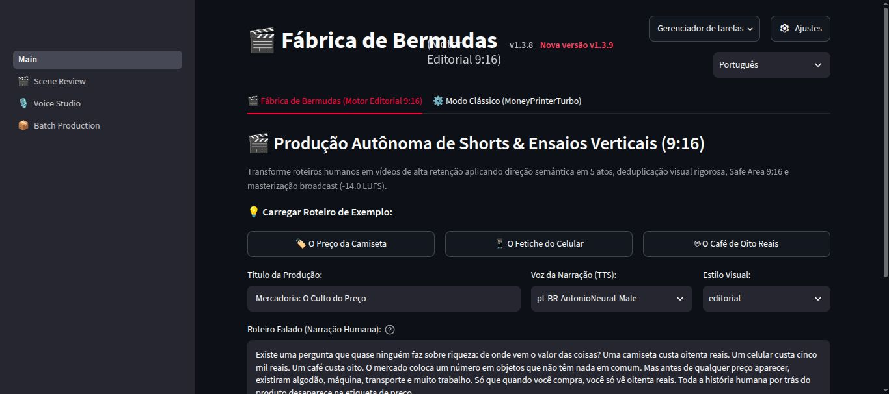

Estúdio de Vídeos Curtos
A ferramenta organiza um fluxo local para dividir roteiros em cenas, buscar mídia, gerar narração e montar vídeos verticais com FFmpeg. A interface permite revisar etapas e organizar produções em lote. O projeto parte do MoneyPrinterTurbo, com a contribuição própria e os recursos herdados identificados.
Implementação / 04
- Interface
- Streamlit
- Montagem
- FFmpeg
- Processamento
- Python, TTS e mídia por cenas
- Organização
- Fila local e arquivos exportados
- Base original
- MoneyPrinterTurbo, com crédito ao projeto upstream
- Estado
- Protótipo local; revisão final feita por uma pessoa

Roteiro dividido em cenas
O fluxo começa com um texto escrito e aprovado por uma pessoa. O aplicativo separa o roteiro em cenas para que texto, mídia, voz e montagem possam ser revisados antes da exportação.
Etapas repetitivas em um só lugar
A interface local em Streamlit organiza busca de mídia, geração de narração e montagem com FFmpeg. Uma fila local permite acompanhar mais de um roteiro e reunir os arquivos produzidos.
Revisão e origem do código
A automação reduz etapas manuais, mas não substitui a revisão do resultado final. O projeto foi construído a partir do MoneyPrinterTurbo; a base original e os recursos herdados permanecem identificados, e as demonstrações herdadas não são apresentadas como produção própria.
Ferramentas
- Python
- Streamlit
- FFmpeg
- SQLite
- TTS
- Processamento de vídeo